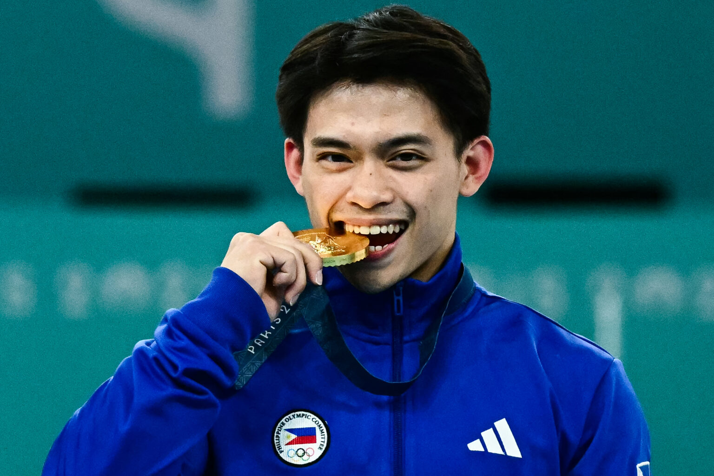
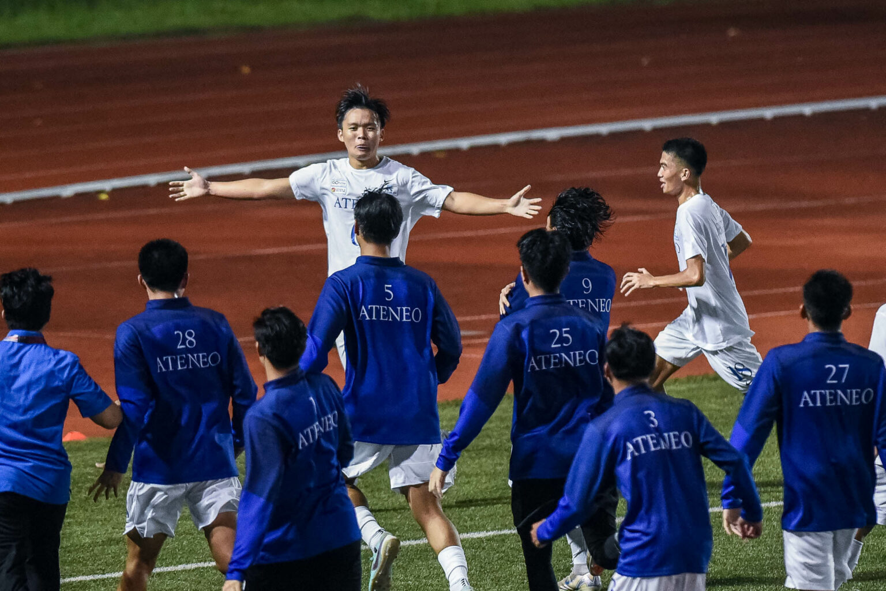

<html lang="en"></html>
<head>
    <meta charset="UTF-8">
    <meta name="viewport" content="width=>, initial-scale=1.0">
    <title>Sports</title>
    <link rel="stylesheet" href="style.css">
    <link rel="icon" href="logo.png" type="image/logo.png">
  
</head>
<body>
    <header>

    <ul>
        <li class="head"><a href="index.html" class = "link">Home</a></li>
        <li class="head"><a href="contact.html" class = "link">Contact</a></li>
        <li class="head"><a href="about.html" class = "link">About</a></li>
    </ul>

  <section class-="sports">
      
  <div class="sports">
  </section>
  <h1 class="sports_1">"Small in Stature, Huge in Talent: Carlos Yulos' victory and Medal-Winning Journey" <br>SOURCE:<a href="https://en.wikipedia.org/wiki/Carlos_Yulo" class="link">GMA</a></h1>
  <p class="article_sports">
    A Filipino artistic gymnast. He is the 2024 Olympic gold medalist at the floor performance and vault events.

    He earned a 15.000 after he stuck his three-and-a-half twist dismount cold. Appreciating the time on the podium, he raised both his fists before presenting to the judges, and later honoring the fans in the audience and placed his hands to his heart to show his appreciation of the fans support. 
  
   He is the first Filipino and the first male Southeast Asian gymnast to win a medal at the World Artistic Gymnastics Championships with his floor exercise bronze medal finish in 2018, as well as the first Filipino and Southeast Asian to achieve a gold medal finish for the same criteria in 2019 at the same event.  
   
   A multi-medalists on the international stage, Yulo is the second Olympic gold medalist for the Philippines after hydilyn Diaz. The first person to win multiple Olympic gold medals for the country, and the first Southeast Asian athlete to win multiple gold medals at the Olympic Games.
   
  </p>
  </div>

  <section class="news">
      
      <h1 class="sports_1">"The UAAP Football Sport: LA SALLE vs ATENEO'S FIGHT for GLORY" <br> SOURCE: <a href=https://news.abs-cbn.com/sports/2024/10/4/ateneo-triumphs-vs-rival-la-salle-for-share-of-lead-2037 class="link">GMA</a></h1>  
      <p class="article_sports">
        PBA Commissioner Willie Marcial revealed on Tuesday that the league had already had a meeting with John Amores.

        The NorthPort guard and his brother were recently involved in a shooting incident in Laguna. 
        Despite the fact that the situation is sensitive, Marcial, stated that the PBA has  not yet to decide the next course of action in handling the matter given the sensitivity of it, but said Amores has already provided his perspective. 
        
        "Pinapunta namin si John Amores last Tuesday sa opisina, nando’n si governor Erick Arejola, si Waiyip (Chong), and si deputy [commissioner] Eric Castro at ‘yung legal natin, si Atty. Melvin (Mendoza)," Marcial said to  reporters on Saturday in Antipolo City. 
        
        "Kasi nasa UPC (uniform players contract) ‘yung mga kailangan i-explain, ‘yung mga violations niya, so binigyan natin ng letter para mag-explain within five days. Sinabi ko lang na ayusin niya, nagso-sorry siya pero sumagot na rin.
        
        "Following Amores' explanation, Marcial stated they will now investigate potential penalties to apply to the cager.
        Amores and his brother were accused of attempted homicide but they were freed from custody after paying their bond.
         Amores' contract with the Batang Pier is still in effect as of right now, pending a decision from the league and the team.
        
        "Sumagot na so ibibigay ko kay Atty. Odjie [Narvasa] so pag-uusapan nami maybe next week," Marcial stated.
        "Alive pa rin. Kaya ayun ‘yung paguusapan kung papano, kung diretso pa ba ‘yung kontrata or hindi. As of now, wala pa (suspension) pero ayun nga, tinitingnan namin kung papaano, kailangan ba siyang i-suspend, pwede pa ba siya maglaro sa PBA or hindi na."
        "Nagkaro’n tayo ng due process sa kanya." 
        
      </p>
     
  </section>
  <section class="news">
      
      <h1 class="sports_1">"PBA Fair Procedure in Jhon Amores Issue/Circumtances" <br> SOURCE: <a href= "https://www.gmanetwork.com/news/sports/basketball/922714/pba-to-follow-due-process-in-handling-john-amores-case/story/"
class="link">GMA</a></h1>  
<p class="article_sports">
        Ateneo de Manila University flipped the switch in the second half and defeated eventual rival De La Salle University, 4-1, to take all the points in the UAAP Season 87 Men's football tournament on Thursday night in front of the large crowd at the UP Diliman Football Stadium.

        After struggling in the first-half, the Blue Eagles found their rhythm going with more corners, and Jet Dela Cruz scored 
         in the second-half brace for their second consecutive win.
        Six points, Ateneo has reached Far Eastern University, which defeated University of the East in today’s opening match, 3-0, but the Katipunan-based team is behind on goal difference. 
        
        Dela Cruz opened the scoring for the  Blue Eagles account in the 49th minute, scoring on Matti Roxas' free kick.
        It didn't take long for the Green Booters to equalize when Luis Henares struck in the 51st minute.
        In  Ateneo's corner, Dela Cruz broke the tie with a goal in the  55th-minute.
        Fonzy Escobin then headed home a cross from Leo Maquiling in the 62nd minute and a corner gave the Blue Eagles a 3-1 lead.
        Galen Hernandez put the icing on the cake with a stoppage-time goal off a Dov Cariño assist.
        Ateneo is currently on a winning streak and will face off against Season 86 finalist FEU this Sunday at 4:30 p.m. In the same field as Quezon City.
        “A lot of adjustments in the second half. I think yun yung nagbigay ng keys sa amin to create goals. Of course, I’m really happy with my players because they performed really well today,” Merida said.
        
        De La Salle remained in the same place. The Green Booters will also return this Sunday against the UST Golden Booters at 2 p.m. at the same venue.
        The match started in the 14th minute.
        
</p>
      
  </section>
  </section>

<div class="bar">
    <div id="menu">
        <section class="feature-box sec_1">
            <li class="nav"><a href="news.html" class="link"><center>News</center></a></li>
        </section>
        <section class="feature-box sec_1">
            <li class="nav"><a href="weather.html" class = "link"><center>Weather</center></a></li>
        </section>
        <section class="feature-box sec_2">
            <li class="nav"><a href="sports.html" class = "link"><center>Sports</center></a></li>
        </section>
        <section class="feature-box sec_3">
            <li class="nav"><a href="editorial.html" class = "link"><center>Editorial</center></a></li>
        </section>
        <section class="feature-box sec_4">
            <li class="nav"><a href="entertainment.html" class = "link"><center>Entertainment</center></a></li>
        </section>
    </div>
    
    

<footer>
    <p><center>&copy Dyurnal-ist 2024 All rights reserved</center></p>
</footer>

</body>
</html>